영화 연출을 전공하고 2013년부터 기획 프로듀서로 영화와 드라마의 기획·제작에 참여해 왔다.
장르와 매체에 얽매이지 않고, 매력적인 세계관과 캐릭터 중심의 이야기를 만들어 가고 있다.
사람과 기술을 연결하는 것, 관객이 하나의 세계를 직접 체험하는 인터랙티브 내러티브에 비전을 두고, 현업을 이어가며 게임 프로젝트를 실험 중이다.
현실에 환상이 스며든 세계,
절망 속에서도 끝내 무언가를 붙잡는 경계의 인물들에게 끌린다.
영화 연출을 전공하고 2013년부터 기획 프로듀서로 영화와 드라마의 기획·제작에 참여해 왔다.
장르와 매체에 얽매이지 않고, 매력적인 세계관과 캐릭터 중심의 이야기를 만들어 가고 있다.
사람과 기술을 연결하는 것, 관객이 하나의 세계를 직접 체험하는 인터랙티브 내러티브에 비전을 두고, 현업을 이어가며 게임 프로젝트를 실험 중이다.
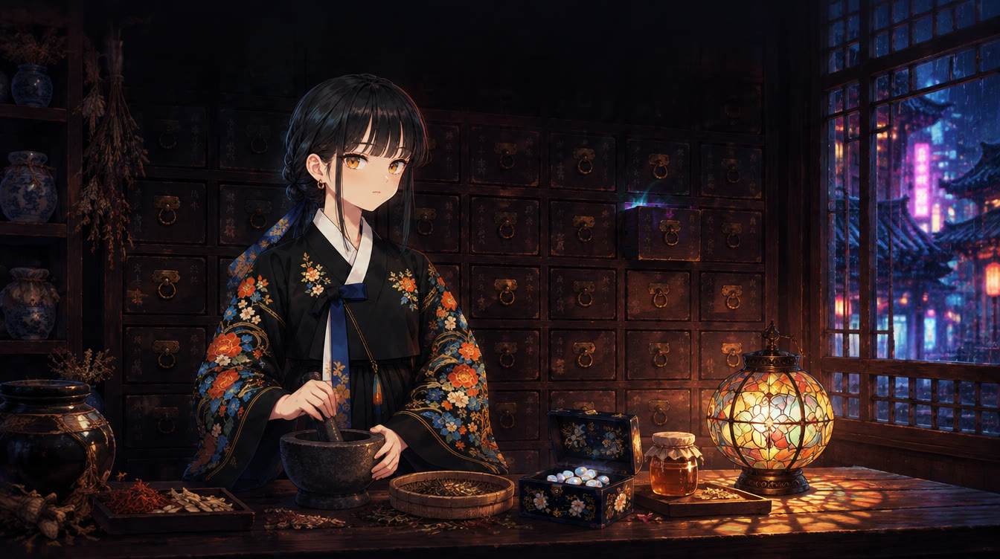
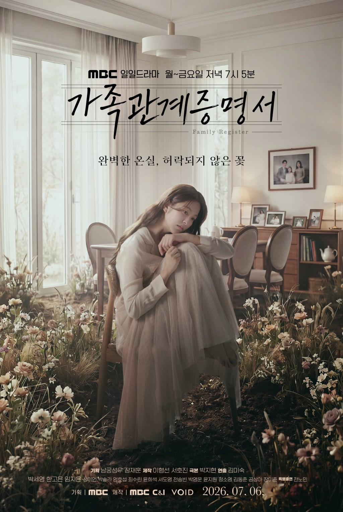
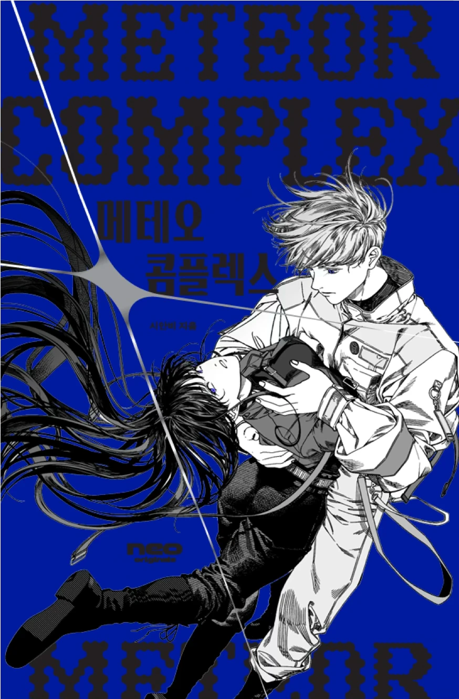
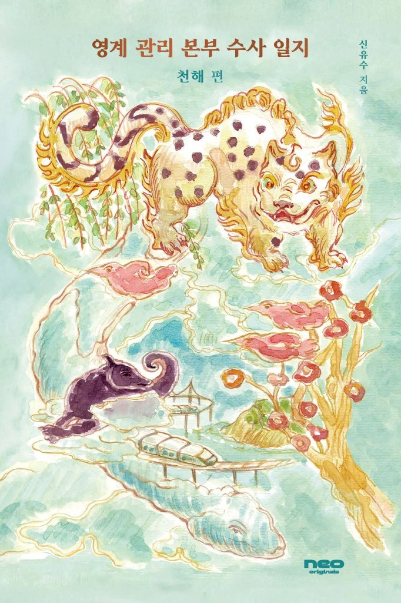
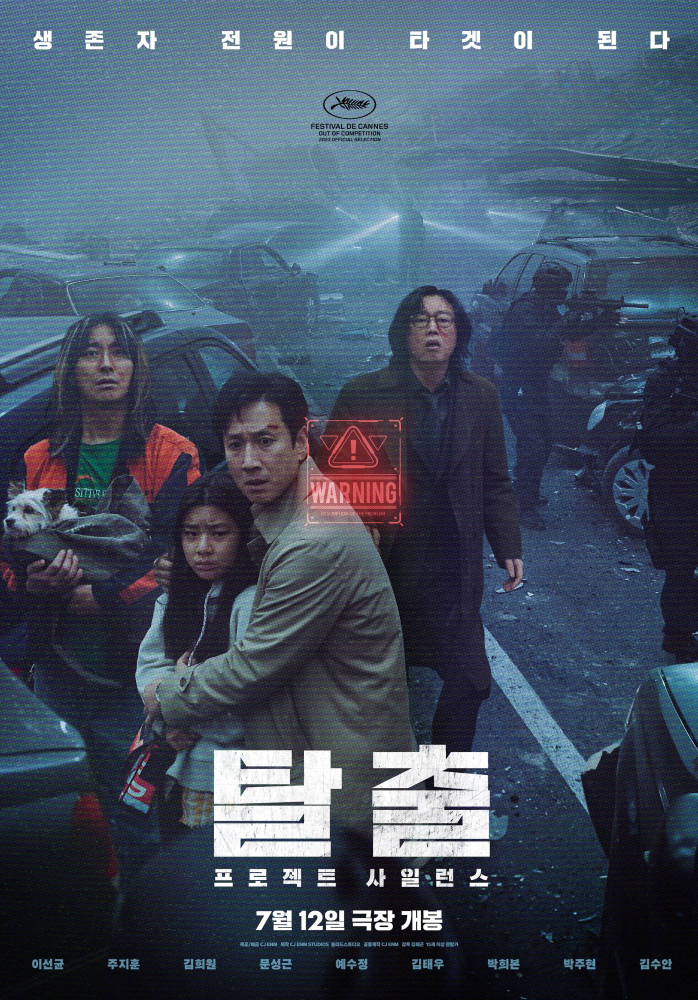
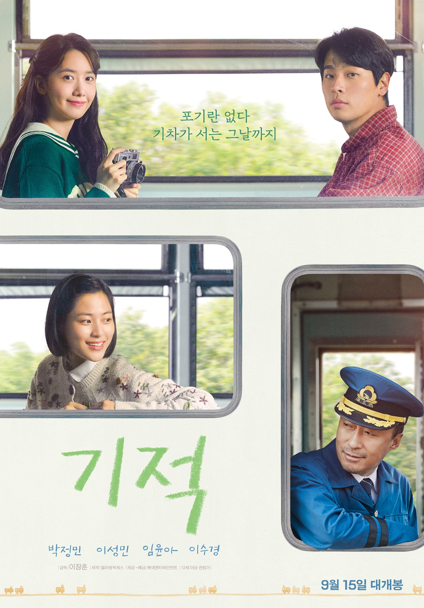
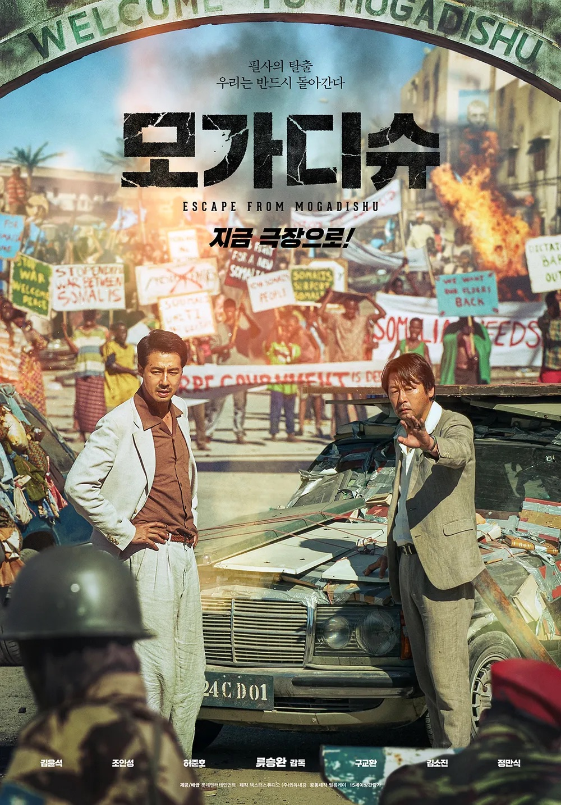
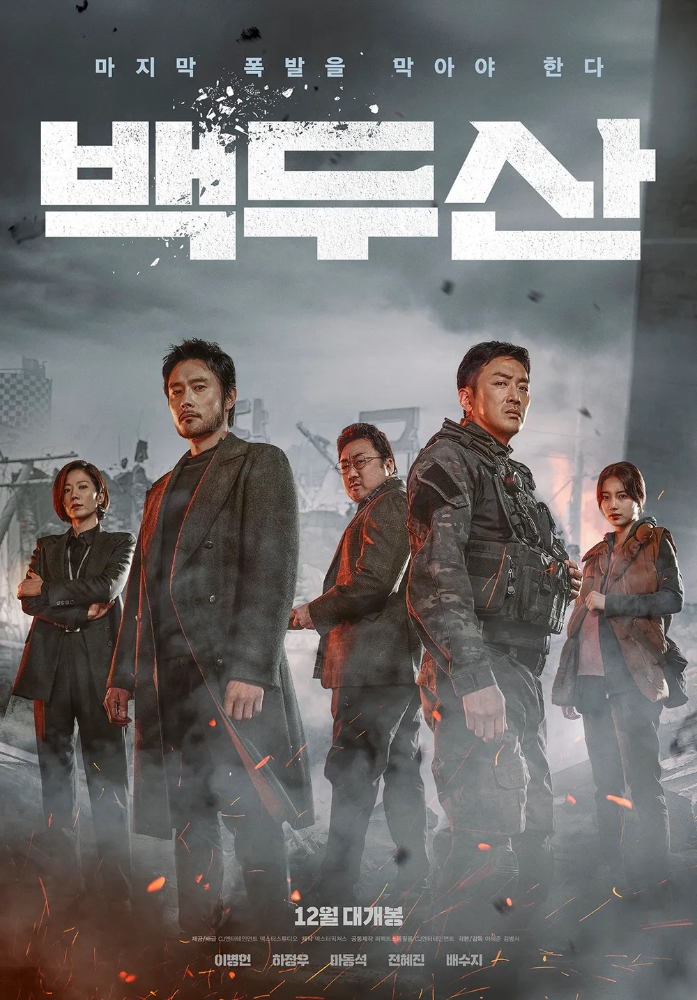
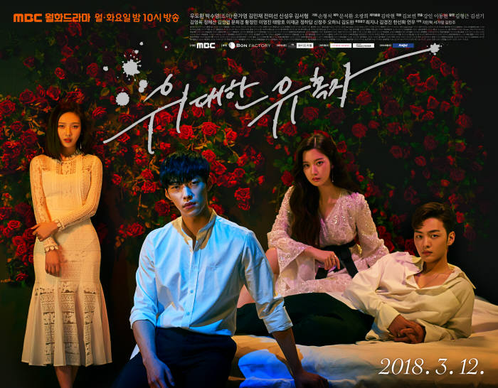
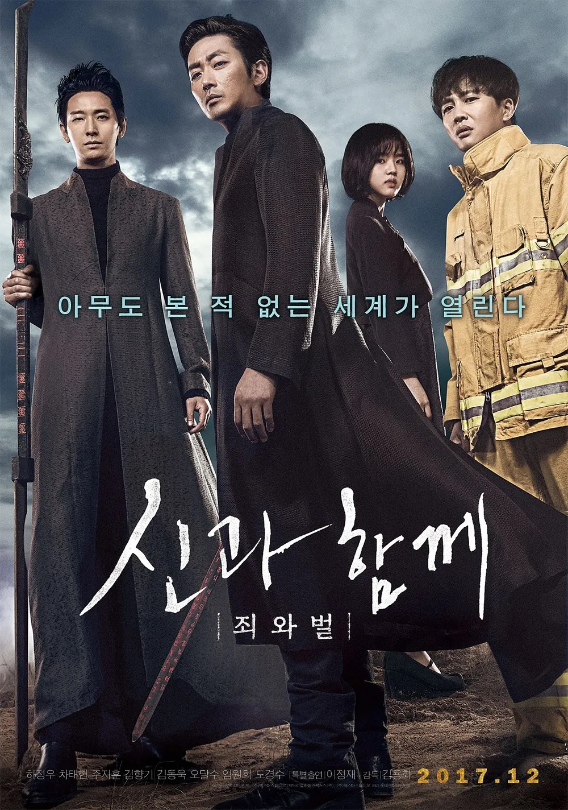
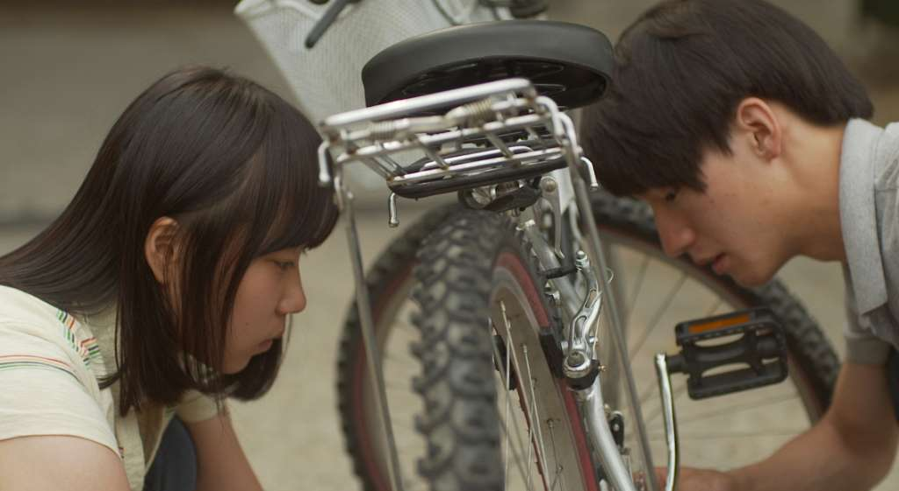
✦ With